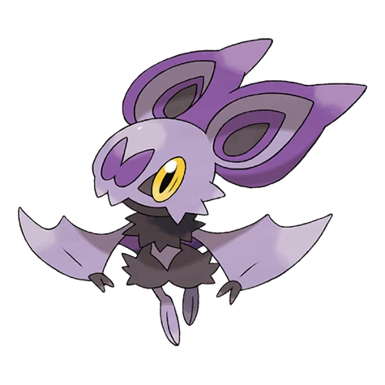

← В покедексКАРТОЧКА № 714 / ОБЫЧНАЯ ФОРМА

ПОЛЕВОЙ АТЛАС / № 714
Нойбат
Noibat
Драконий
Начало большой истории иногда помещается на ладони.
- Рост
- 0,5 м
- Вес
- 8 кг
- Поколение
- 6
Способности: frisk · infiltrator · telepathy (скрытая)
Базовые
характеристики.
Здоровье40
Атака30
Защита35
Спец. атака45
Спец. защита40
Скорость55
Сумма характеристик245
Карта
уязвимостей.
Слабости
Ледяной ×4Каменный ×2Драконий ×2Волшебный ×2
Сопротивления
Огненный ×0,5Водный ×0,5Травяной ×0,25Боевой ×0,5Насекомый ×0,5
Иммунитеты
Земляной ×0
Типовой урон для обычной формы. Без влияния способностей, предметов, погоды и приёмов, меняющих правила. Например, Protean у Грениндзя может менять его тип в игре.
Следующая
глава истории.
№ 714
Нойбат
Базовая стадия
Условия показаны для основной доступной ветки данных. Альтернативы по играм и формам сохранены в полном снимке JSON. Внешние ссылки ведут к PokeAPI.
Источники: характеристики PokeAPI · вид · эволюция · оригинал иллюстрации
Снимок 2026-10-03. Русские имена локализованы вручную. Вступление — авторская заметка фан-проекта.